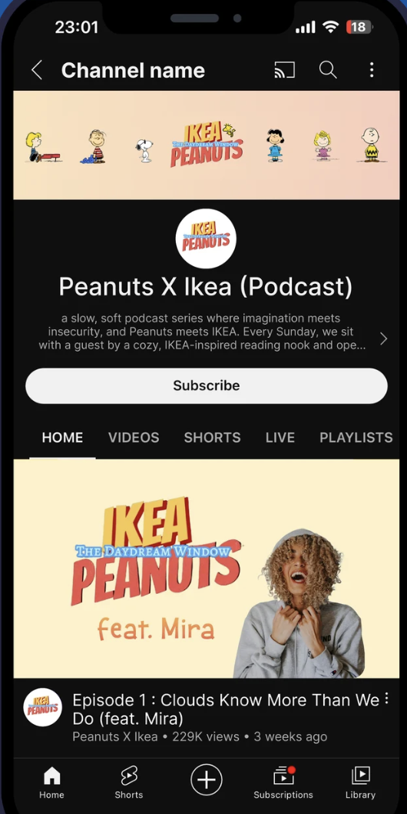
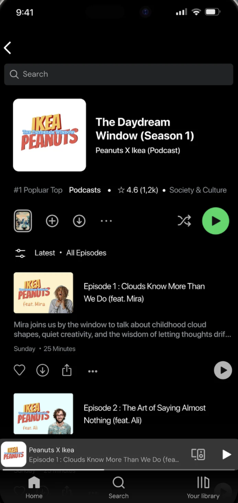
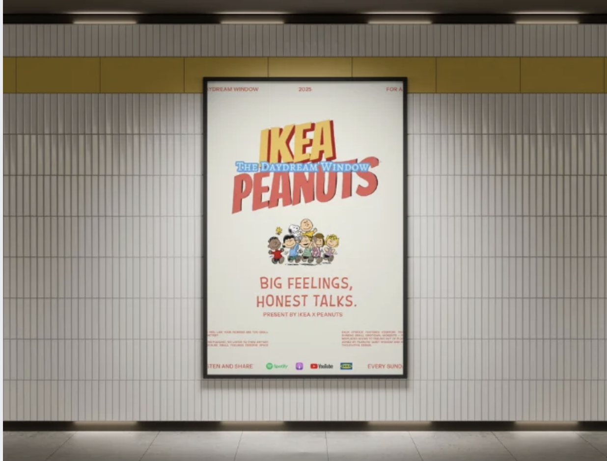

Striplys Window Talks
Brief Overview
Striplys Window Talks is a conceptual narrative platform that reimagines IKEA showrooms as immersive emotional archives.
It explores how conversations about home and identity can be transformed into spatial experiences using the Striplys Window—a real-time memory visualizer.
Problem Statement
Modern retail environments often prioritize transactions over connection. While IKEA creates simulations of life, there is a missing emotional bridge between the product and the user's lived history.
Digital audiences are seeking "slower" content—authentic, reflective experiences that ground them in a world of noise.
Objectives
- Create Emotional Brand Engagement: Connect through stories rather than ads.
- Integrate Peanuts Meaningfully: Rooted in nostalgia and emotional honesty.
- Redefine Podcast Formats: Transform audio into a spatial experience.
Research & Insights
Research revealed that IKEA spaces are tied to life transitions. Peanuts provides the vocabulary for the vulnerability inherent in those moments.
Linus (Reflection)
Snoopy (Imagination)


03 / System & Logic
Based on the architectural project slides, the following is a structured summary of the proposed podcast ecosystem—a soulful collaboration merging IKEA’s spatial intelligence with the emotional honesty of Peanuts.
1. Logistics & Schedule
Frequency & Release
WEEKLY RELEASE: SUNDAY @ 2:00 PM
Consistently habit-forming weekend listening for the community.
Medium Strategy
AUDIO + VIDEO HYBRID
Consisting of a full-length podcast alongside shorter social media clips for multi-platform reach.
Total Duration: 25 Minutes
- MINS: Conversation (Deep dive into memory)
- MINS: "Snoopy Break" (Reflective pause)
- MINS: Reflection (Takeaways & Home rituals)
Themed Seasonal Specials
AUG: Back to School
MAR: Spring Renewal
OCT: Mental Health Day
2. Platforms & Participant Recruitment
The project utilizes IKEA’s internal platforms alongside mainstream podcast channels. To gather authentic human memories, recruitment is split into two primary channels:


Direct Call-to-action forms hosted on the official IKEA website and integrated social media platforms.
Physical "Story Boxes" (resembling lucky draw boxes) placed in-store for visitors to drop off anonymous memories.
3. Quality Assurance & Production Strategy
To ensure high quality in interviewee selection and production, we implement a strict 5-step editorial protocol governs every conversation:
Profiles
Culture
Convos
Flow
Selection



Supporting Ecosystem Architecture
The supporting technical infrastructure ensures a high-fidelity transition from live IKEA spatial recording to a polished digital release.




04 / Implementation / Flow
Guests enter a curated set where layered IKEA textiles lower emotional shields.

The Choice: Picking a Peanuts reflection card for immediate emotional access.

An intimate, slow-paced dialogue turning the "showroom" into a "story room."

The Striplys Window translates memories into real-time comic animations.

A closing moment focusing on emotional wellbeing and personal rituals.

Technical Component Preview: REAL-TIME_VISUALIZER
Results & Impact
Increased brand loyalty through emotional engagement and longer in-store interaction times.
Renewed relevance for younger generations through modern, spatial storytelling.